성능점검기록부만으로는 알 수 없는 차량 상태까지
더블체크진단평가가 꼼꼼하게 확인합니다.
다음과 같은 고민이 있으시다면 정밀점검이 필요합니다.
중고차 구매 후 차량 상태가 걱정되시는 분
성능점검기록부와 실제 차량이 같은지 확인하고 싶은 분
외판 및 주요골격 교환·판금, 누유·누수 등 차량 상태를 정확하게 확인하고 싶은 분
보상 또는 무상수리가 가능한 부분이 있는지 확인하고 싶은 분
중고차 정밀점검 전문 업체입니다.
전문 장비로 눈에 보이지 않는 부분까지 점검합니다.
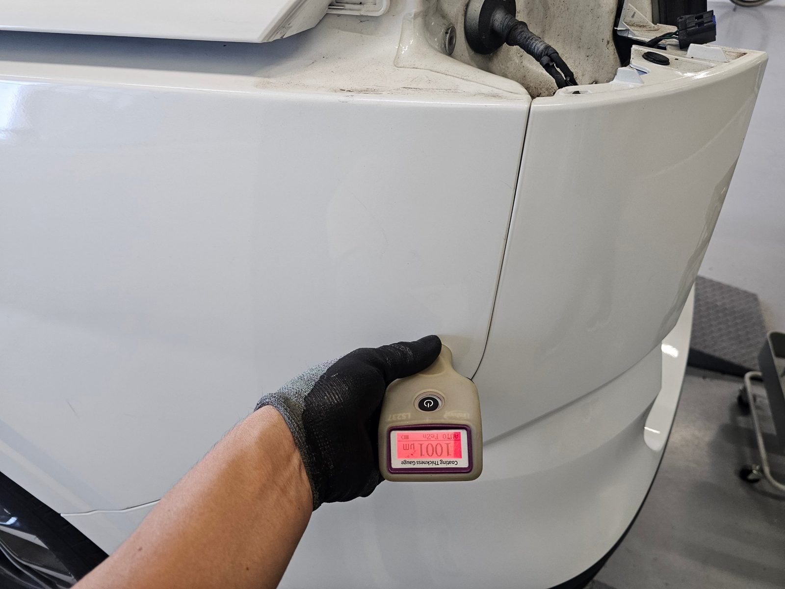
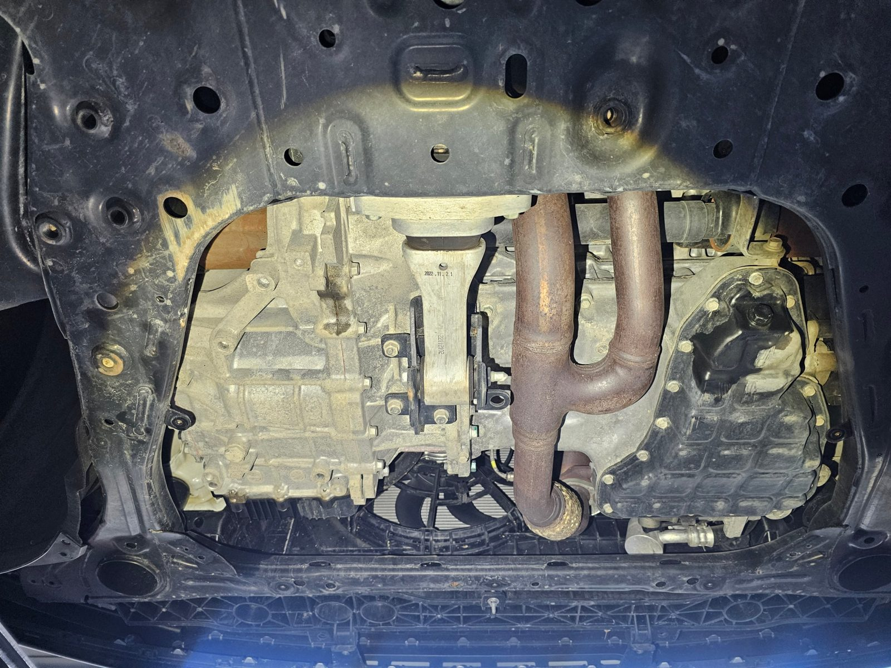
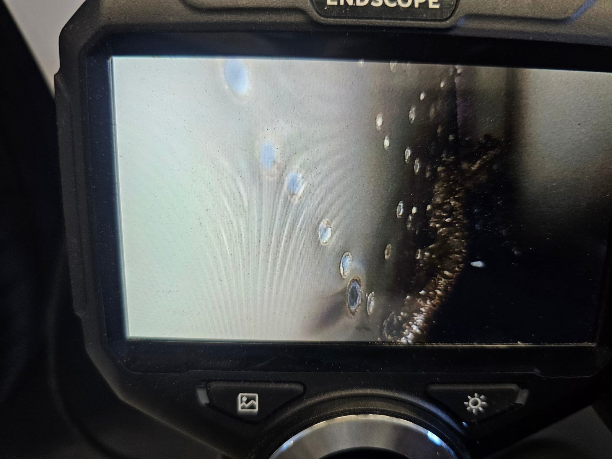
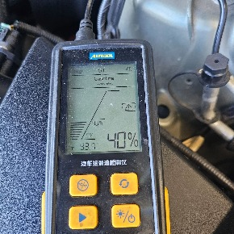
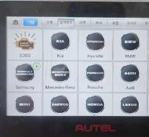
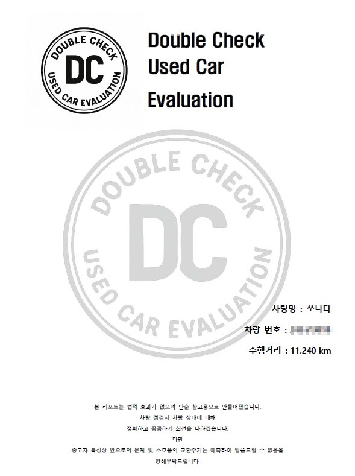
공식 기관 자료로 확인한 현실입니다.
그래서 보증기간 안에, 근거를 갖춘 정밀점검이 필요합니다.
성능점검기록부는 중고차 구매 시 중요한 자료입니다. 하지만 기록된 내용과 실제 차량의 상태가 일치하는지는 별도로 확인할 필요가 있습니다.
더블체크진단평가는 성능점검기록부를 기준으로 실제 차량을 다시 확인하고, 기록과 다른 부분이 있는지 꼼꼼하게 비교합니다.
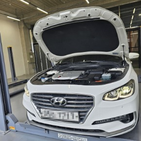
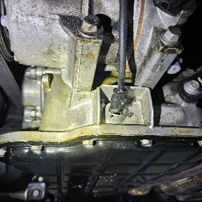
점검부터 결과 설명까지 약 1시간 내외
더블체크진단평가를 직접 이용해주신 고객님들의 솔직한 후기를 확인해보세요.
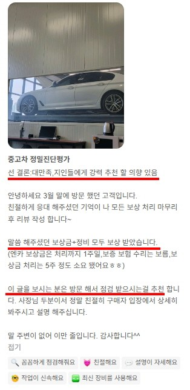
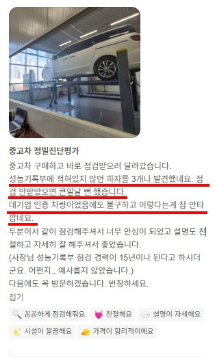
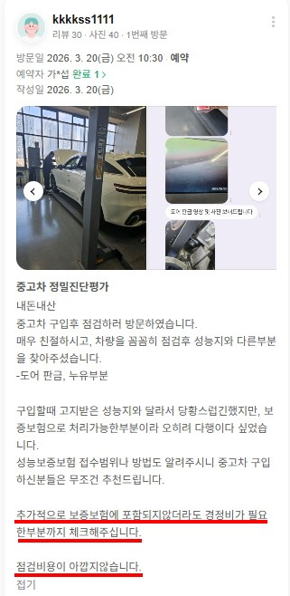
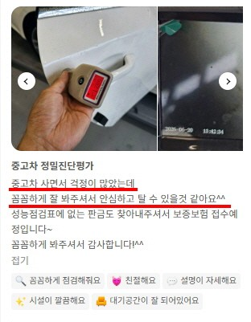
정밀점검 · 결과 설명 · 리포트 제공
정밀점검 · 결과 설명 · 리포트 제공
정밀점검 · 결과 설명 · 리포트 제공
100% 예약제로 운영됩니다. 방문 전 꼭 예약해 주세요.